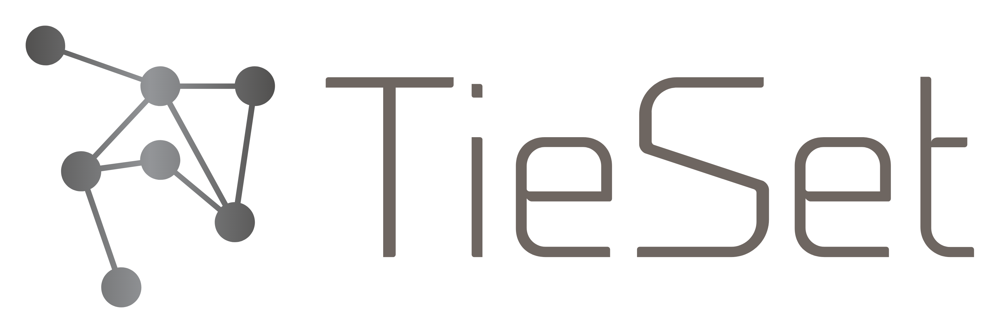

Kiyoshi Nakayama, Ph.D.
Founder & CEO of TieSet, Inc.
Transitioning from Big Data to Collective Intelligence towards the era of Internet of Intelligence
I am a founder and CEO of TieSet Inc..
I envision the future technology that intelligence drives society, not just data.
TieSet tries to be the leader of the collective intelligence era by implementing an intelligence centric platform to replace big data systems that are getting messed up and obsolete because of problems like data privacy, latency, computational costs.
In particular, we actively conduct research and development of the latest AI technologies and distributed systems such as federated learning, transfer learning, and incremental learning.
I previously led a project on decentralized blockchain-based Federated Learning (FL) framework for various AI applications of public infrastructure, smart city, agriculture, robotics, and energy management in which we developed the world's first fully decentralized FL framework using blockchain. I was a Research Scientist at NEC Laboratories America located in San Jose, California. At NEC Labs, I worked on design and optimization of Computer Vision systems for long-term, rich, and general understanding of videos from multiple, distributed, heterogeneous sources. I have also developed and deployed a variety of infrastructure platforms and applications with my industrial and technical expertise in distributed systems and networks, cloud and IoT computing, and open-standard protocol development and integration.
In my PhD at University of California, Irvine, I digged into distributed networks, optimization, and graph theory. Fortunately, two of my publications received the Best Paper Awards. He has published around 30 international papers and drafted about 10 patents.
I am also wrting the world first book with Packt Publishing about federated learning for production with Python.


I previously led a project on decentralized blockchain-based Federated Learning (FL) framework for various AI applications of public infrastructure, smart city, agriculture, robotics, and energy management in which we developed the world's first fully decentralized FL framework using blockchain. I was a Research Scientist at NEC Laboratories America located in San Jose, California. At NEC Labs, I worked on design and optimization of Computer Vision systems for long-term, rich, and general understanding of videos from multiple, distributed, heterogeneous sources. I have also developed and deployed a variety of infrastructure platforms and applications with my industrial and technical expertise in distributed systems and networks, cloud and IoT computing, and open-standard protocol development and integration.
In my PhD at University of California, Irvine, I digged into distributed networks, optimization, and graph theory. Fortunately, two of my publications received the Best Paper Awards. He has published around 30 international papers and drafted about 10 patents.
I am also wrting the world first book with Packt Publishing about federated learning for production with Python.
Current Role: Founder & CEO

TieSet Inc.
(6/2020 - Present)
Transitioning from Big Data to Collective Intelligence
Our Product: Scalable, Traceable, Adaptive, Distributed Learning Platform (STADLE)
Past Role: Research Scientist
NEC Laboratories America
(10/2015 - 5/2020)
R&D Areas: Distributed AI, Federated Learning, Computer Vision, Anomaly Detection, Smart Infrastructure
Past Appointment: Postdoctoral Researcher
Fujitsu Laboratories of America
(9/2014 - 9/2015)
R&D Areas: Distributed Systems, Cloud Computing, IoT, Open Standardization, Smart Energy
Degree: Ph.D. in Computer Science
University of California, Irvine, (9/2011 - 6/2014)
Focus: Distributed Networks and Optimization, Graph Algorithms
Projects: Distributed Systems, Optimal Flow, Network Fault Tolerance, Wireless Sensor Network, and Smart Energy
Honors and Awards
- Business Contribution Award from NEC Labs in 2017
- Best Paper Award, IEEE International Conference on Smart Grid Communications (SmartGridComm) 2012
- Best Paper Award, IEEE International Congress on Ultra Modern Telecommunications and Control Systems (ICUMT) 2010
-
Full Scholarship for Ph.D. Study from Japanese Government
- Awarded for top 22 students from nationwide applicants
Selected Publications
Machine Learning & Blockchain related
-
BAFFLE: Blockchain-based Aggregator-Free Federated Learning
Paritosh Ramanan, Kiyoshi Nakayama, Ratnesh Sharma - arXiv:1909.07452. Under Review for SysML 2019. -
Decentralized Transactive Energy Auctions with Bandit Learning
Zibo Zhao, Kiyoshi Nakayama, Ratnesh Sharma - IEEE PES Transactive Energy System Conference (TESC), Minneapolis, MN USA, Jul. 2019. (Selected as Top 4 Papers) -
Transactive Energy Management with Blockchain Smart Contracts for P2P Multi-Settlement Markets
Kiyoshi Nakayama, Ramin Moslemi, Ratnesh Sharma - IEEE Conference on Innovative Smart Grid Technolo- gies (ISGT), Washington DC, Feb. 2019. -
Detection of False Data Injection Attacks in Cyber-Physical Systems using Dynamic Invariants
Kiyoshi Nakayama, Nikhil Muralidhar, Chenrui Jin, Ratnesh Sharma - IEEE International Conference on Machine Learning and Applications (ICML), FL USA, Dec. 2019. -
illiad: InteLLigent Invariant and Anomaly Detection in Cyber Physical Systems
Nikhil Muralidhar, Chen Wang, Nathan Self, Marjan Momtazpour, Kiyoshi Nakayama, Ratnesh Sharma, Naren Ramakrishnan - ACM Transactions on Intelligent Systems and Technology 2017.
Networks and Distributed Optimization
-
A Decentralized Algorithm for Network Flow Optimization in Mesh Networks
Kiyoshi Nakayama, Toshio Koide - IEEE Global Communications Conference (Globecom), Atlanta GA USA, Dec. 2013. -
Distributed Flow Optimization Control for Energy-Harvesting Wireless Sensor Networks
Kiyoshi Nakayama, Nga Dang, Lubomir Bic, Michael Dillencourt, Eli Bozorgzadeh, Nalini Venkatasubramanian - IEEE International Conference on Communications (ICC), Sydney Australia, June 2014. -
Tie-set Based Fault Tolerance for Autonomous Recovery of Double-Link Failures
Kiyoshi Nakayama, Kyle Benson, Vahe Avagyan, Michael Dillencourt, Lubomir Bic, Nalini Venkatasubramanian - IEEE Symposium on Computers and Communications (ISCC), Croatia, July 2013.
Hobbies
- Jazz Clarinet Player, Japanese Dancer, and Baseball Player
Contact
- Office Location: Santa Clara, California 95050
- E-mail: knakayama@tie-set.com